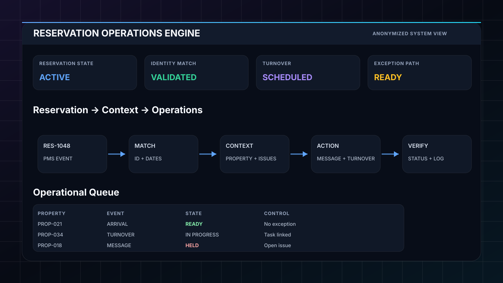

Reservation context is distributed
Guest information, property context, dates, communication and operational tasks can live in different systems and formats.
A connected operations model for reservation context, guest communication, cleaning and turnover coordination, property operations and exception handling in short-term-rental environments.

Operations design and workflow automation around reservation and property context.
Guest information, property context, dates, communication and operational tasks can live in different systems and formats.
When a form lacks a reservation ID, the workflow must combine fields and avoid silently attaching data to the wrong booking.
Open complaints, unusual arrival conditions or incomplete data should pause or branch the normal workflow instead of sending the wrong message.
A strong fallback matching system combines multiple signals and sends ambiguous cases to manual review.
Reservation event, scheduled message, form submission or operational change enters the workflow.
Pull reservation, property and open-issue context before taking an automated action.
If an active complaint or unresolved exception exists, pause or route the normal communication path.
Send the correct message, update the operational record or create the next turnover/action task.
Operational state and exception checks matter as much as the trigger itself.